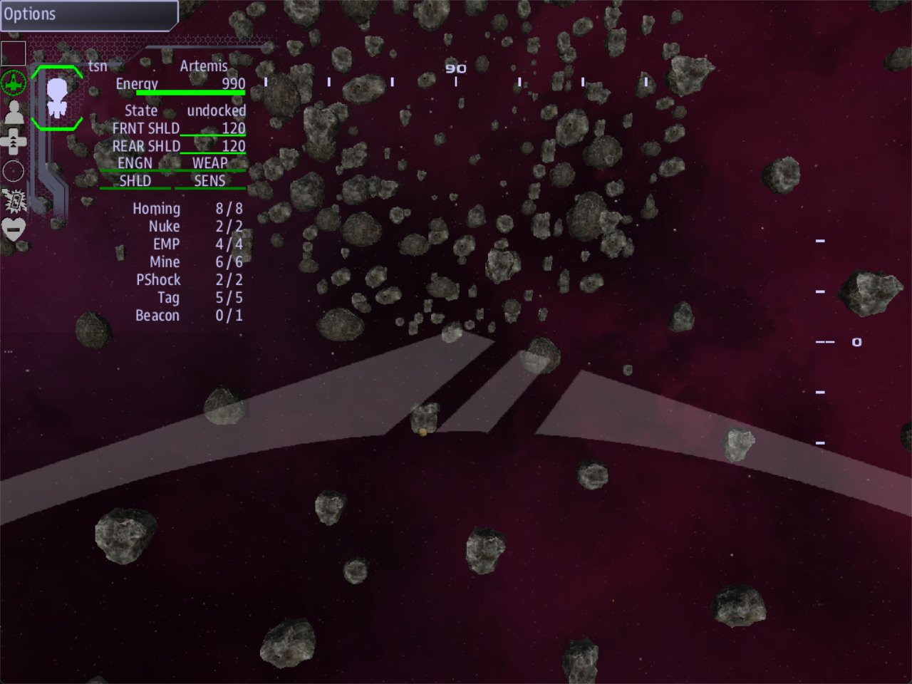

Class 4, Lecture 2 - A ruin is a place¶
What you will have at the end¶
An ancient ruin of your own, standing in space past the drifting hulk. It has three rooms and two passages. You can look at its plan in the editor, find it on the map by name, and fly to it.

The Mouth from inside: three rooms and two passages are all it takes to make a place to fly.You will write one section in mission.amd. You will not touch story.mast.
Today the ruin is only a place. What its walls are made of, what is inside it, and who goes in wearing a suit all come in later lectures.
The video¶
About 5 minutes. Subtitles are available in the player.
Before you start¶
- The mission
MyRuinfrom Lecture 1, as that lecture left it: made withsbs create, its libraries brought up to date, and the borrowed ruin deleted again.mission.amdis 60 lines long and ends with the record Derelict Materials. MyRuinopen and trusted in VS Code, a command prompt open inC:\Cosmos\data\missions, and the game closed.sbs lint MyRuinsaysclean.
Did you skip Lecture 1? Make the mission now, the way you made MyMission in Class 1:
This class does not build on MyMission. Your Class 1 story ends the game ten minutes
after it starts, and a ruin takes longer than that to fly. So the ruin gets a mission of
its own, and Lecture 7 gives it a story and a clock of its own.
Step 1 - You describe the space, not the walls¶
A ruin is hollow. You do not build its walls. You say where the open space is, and everything else is wall.
| You write | It is | Think of it as |
|---|---|---|
Chamber: |
A ball of open space | A room |
Passage to: |
A tube of open space between two rooms | A tunnel |
Box: |
A block of open space with flat sides | A built room. You meet it in the exercise |
Today you write three chambers and two passages.
Step 2 - The ruin itself¶
Open mission.amd. Go to the very end of the file, below the last line of Derelict
Materials. Leave two blank lines, and type:
## [Relics](relics)
### [The Hollow](hollow)
---
Loc: 0, 0, 20000
---
Older than anyone who could have built it. Three rooms, as far as anyone knows.
| Line | What it means |
|---|---|
## [Relics](relics) |
A new section. The key in round brackets is relics. The game looks for that word (ruins works too) |
### [The Hollow](hollow) |
The ruin: its name, then its key. Rooms will point at the key |
Loc: 0, 0, 20000 |
Where the ruin stands. Three numbers: across, height, along |
| The last line | A note for you. Players never see it |
The station in this mission is at 0, 0, 0. The hulk is at 0, 0, 9000. So the ruin is
on the same line, past the hulk, a little more than twice as far out.
Keep the Loc: line, with all three numbers. Without it the ruin is built at 0, 0, 0,
around the station.
Step 3 - The first room¶
Below the ruin, leave one blank line and type:
### [The Mouth](mouth)
---
Relic: hollow
Chamber: 0, 0, 0, 900
---
The way in. Wide, and worn smooth.
| Line | What it means |
|---|---|
### [The Mouth](mouth) |
Three hashes, the same as the ruin. Not four |
Relic: hollow |
Which ruin this room belongs to. It is the ruin's key, not its name |
Chamber: 0, 0, 0, 900 |
A round room. Across, height, along, then the radius |
The first three numbers are measured from the ruin's Loc:, not from the station. So
0, 0, 0 means "right where the ruin is". Move the ruin later and every room moves with
it.
The radius is 900, so the room is 1800 across. For scale, the game treats your light cruiser as a ball 100 across.
Step 4 - Two more rooms, and the passages¶
Below The Mouth, leave one blank line and type:
### [The Nave](nave)
---
Relic: hollow
Chamber: 3000, 0, 0, 1100
Passage to: mouth 350
---
The big room. Whatever this place was for, it happened here.
### [The Vault](vault)
---
Relic: hollow
Chamber: 3000, 0, 2800, 700
Passage to: nave 300
---
The far end. Small, round, and a long way from the door.
Passage to: mouth 350 is a tunnel from this room to the room whose key is mouth. The
number is the tunnel's radius, so this one is 700 across.
| Rule | Why |
|---|---|
Name the other room by its key: mouth, not The Mouth |
The game reads one word |
| A space between the key and the number, and no comma | With a comma the number is not read, and you get 200 |
| Leave the radius out and you get 200 | A narrow tunnel |
| Write each passage once, on either of its two rooms | Twice makes two tunnels in the same place |
| Keep rooms that share a passage within about 3500 of each other | The Relic Plan warns you when a passage is longer than 5000 |
The Nave is 3000 to one side of The Mouth. The Vault is 2800 further along from The Nave. The ruin turns a corner.
Step 5 - Look at it¶
Save. Keep mission.amd as the tab in front. Press Ctrl+Shift+P, type Relic Plan, and
choose Artemis AMD: Show Relic Plan.
A panel named Relic Plan opens beside your file. It draws your ruin from the file alone. The game does not need to be running.
| What you should find | What it is |
|---|---|
| The Hollow at the top left | The ruin's name |
| Three round shapes, labelled The Mouth, The Nave, The Vault | Your chambers |
| Two bands joining them | Your passages |
| A grid | Each square is 1000 on a side |
The panel opens looking at the ruin from an angle. Press Top to look straight down. That is the plan.
Hold the pointer over a room and it tells you its name and radius: The Mouth r900. Hold it
over a passage and it tells you its length: nave - mouth: 3000u.
Now change something from the panel:
- Click The Vault. A small box of numbers appears at the bottom right.
- In the field marked
r, type800and press Enter. - Look at your file. One line has changed:
Chamber: 3000, 0, 2800, 800. - Press the panel's Undo button. The line goes back to
700.
The panel and the file are the same thing. An edit in one is an edit in the other, and it is always one line.
Leave Preview and Live alone for now. They belong to a later lecture.
Step 6 - Put it in the game¶
There is nothing to do. Your mission already builds every ruin written in mission.amd.
Open story.mast and look at line 62. Do not change it:
When the map starts, that one line does four things for each ruin in the file:
| It | So that |
|---|---|
| Builds the space from your rooms and passages | The ruin is a place |
| Puts rock around the space | There is something to see |
| Places what is inside the ruin | Nothing yet. Later lectures fill it |
Writes the ruin's name on the map, at its Loc: |
Helm can find it |
A mission with no Relics section is not a mistake. The line does nothing and the mission runs as before. That is how your Class 1 mission ran.
Step 7 - Check it¶
You want this:
Lint names every mistake in this first table. The word in the last column is at the end of the line lint prints.
| Mistake | What the game does | Lint says |
|---|---|---|
Passage to: crypt 300, and no room has the key crypt |
Builds no ruin at all | relic-dangling-passage |
Passage to: The Mouth 350 (the name, not the key) |
Builds no ruin at all | relic-dangling-passage, about the word The |
Relic: holow, or Relic: The Hollow, on a room |
That room is missing. If another room has a passage to it, no ruin at all | relic-dangling-parent |
Chambre: |
Builds no ruin at all. The room's passage still names it, and it has no space | unknown-field: did you mean Chamber? |
Pasage to:, or Passage: |
The ruin is built with that passage missing. The room is there, sealed off | unknown-field, and relic-disconnected |
A radius of 0 or -700 |
Builds no ruin at all | relic-bad-radius |
Three numbers where four are needed, or 700u for the radius |
Builds no ruin at all | relic-short-part |
| A room that no passage reaches and that touches no other room | The room is there, sealed off | relic-disconnected. It points at the ruin's heading, not at the room |
| Two rooms with the same key | One of the two rooms is missing | duplicate-key |
| A room written with four hashes | That room is missing. With every room nested, no ruin at all | relic-part-level: give it 3 hashes |
| A room written with two hashes | That room, and every room below it, is missing | relic-outside-section |
A room with no Relic: line, or with the line below the closing --- |
That room is missing | relic-part-no-owner |
Loc: with two numbers |
The ruin is built around the station | relic-bad-loc |
No colon after Chamber |
Builds no ruin at all | fence-syntax, an error |
The closing --- left off a room |
On the last room in the file, that room is missing. On any other, the next heading closes it and the room is built, with a line in mast.runtime.log |
unclosed-data-fence, an error |
## [Old Places](places) for the section |
No ruin at all | section-not-loaded |
A # typed in front of the relics_spawn line in story.mast |
No ruin at all | section-not-loaded, about your Relics section |
| The section heading left out, or written with three hashes | No ruin at all. The rooms are read as scans | relic-outside-section |
A missing room that another room has a passage to is a passage to nowhere, and that means no ruin at all. In your file both The Mouth and The Nave have a passage leading to them.
This is the line lint prints for the first row, whole:
[WARNING] line 90: 'crypt' is not a room of 'hollow' - a passage has to end on a room's key, and with this one going nowhere the game does not build 'hollow' at all (relic-dangling-passage)
Fix every one of these before you play. A warning here is not a small thing: with most of them the game builds no ruin at all, and with the rest a room is missing or cut off.
When the game cannot build a ruin it does not stop. The rest of the mission runs, and the
reason is written to mast.runtime.log in your mission folder, in a line that begins
relic 'hollow' was not built. An empty file there means nothing went wrong.
What lint cannot see¶
Lint says clean for these, and they are still wrong:
| You wrote | What happens | What tells you |
|---|---|---|
No Loc: line at all |
The ruin is built around the station | A line in mast.runtime.log |
A radius of 90000 |
A room bigger than the whole map | Nothing |
Passage to: mouth, 350 (a comma) |
The number is not read. The tunnel is 400 across, not 700 | Nothing |
So check those by eye.
One more, which goes the other way. A long dash where a minus sign belongs (a word
processor types one by itself) gets two warnings from lint: non-ascii, and
relic-short-part saying a number is missing. The game reads the dash as a minus and
builds the room where you meant it. Type the plain minus all the same.
Step 8 - Play it¶
Start the game with a server and a Helm console:
- On Helm's map, look past the hulk for a marker named The Hollow. It is 20000 from the station.
- Fly to it. The marker is at the middle of The Mouth.
- The rock around you is the wall of the first room. Go on through the passage to The Nave, then turn and go on to The Vault.
The rock is scenery. It does not stop your ship, and you can fly back out through it. It is spaced well apart: from inside, a room looks like a field of rocks, not like a wall.
If something goes wrong¶
| What you see | Likely cause |
|---|---|
The panel says No relic in this file. |
mission.amd was not the tab in front when you opened the panel, or the ruin has no Loc: line |
| The plan is right and the game has no marker | Lint has a warning you have not fixed. Open mast.runtime.log in the mission folder: it says why the ruin was not built |
| No station, no hulk, no ship | story.mast does not compile. Lint names the line under story.mast (compile). Line 62 starts with four spaces, not three and not a tab |
| Rooms are missing in the game | A room has two or four hashes, or no Relic: line, or a misspelled Relic: key. Lint names each one |
| The ruin is wrapped around the station | No Loc: line, or it has two numbers |
Lint says solves into 2 separate pieces |
A room is not joined to the rest. Look for the room with no passage |
Lint says section-not-loaded about your Relics section |
Line 62 of story.mast is gone, or has a # in front of it. If your story.mast never had such a line, the mission was made with an older copy of the tool: type sbs update, and make the mission again |
Exercise¶
Add a fourth room to your ruin, and make it a built one.
- Below The Vault, leave one blank line and add a box that overlaps The Nave:
### [The Gallery](gallery)
---
Relic: hollow
Box: 3000, 0, -1600, 600, 400, 800
---
A built room, with flat walls and real corners. Somebody added this later.
A box has six numbers: where its middle is (across, height, along), then half its width, half its height and half its length. This one is 1200 by 800 by 1600.
-
This box has no passage. It joins the Nave by overlapping it. The Nave reaches 1100 from its middle. This box starts 800 from the Nave's middle, so they share 300. That shared space is the doorway.
-
Open the Relic Plan and press Top. You should have four rooms.
-
Move the box away: change
-1600to-1900. Run lint. It tells you the ruin is in 2 pieces:
[WARNING] line 65: 'hollow' solves into 2 separate pieces - part of it cannot be flown to from the rest. Rooms must OVERLAP, not abut: a zero-thickness join reads as connected and is not (relic-disconnected)
Line 65 is the ruin's heading. Lint does not say which room is cut off.
- Leave the box where it is and join it with a tunnel instead. A box can have a passage,
written the same way as on a chamber. Add one line to its fence, under
Box::
Run lint again. It is clean, and the plan shows a band between the box and The Nave.
- Give your ruin and its rooms your own names: change the words in square brackets. Leave
the keys in round brackets alone, because
Relic:andPassage to:lines point at them. Write your own note under each.
Lecture 3 starts with The Gallery as step 5 leaves it. If you skip this exercise, Lecture 3 gives you the record to type.
Checkpoint¶
You are done when all four are true:
sbs lint MyRuinshowsmission.amdasclean.- The Relic Plan shows every room you wrote, each one joined to the rest.
- In the game, a marker with your ruin's name is on Helm's map where your
Loc:says. - When you fly to the marker, there is rock around you.
Next¶
Lecture 3 dresses the ruin: what its walls are made of, and how to make a built hall look different from a cave.
Further reading¶
- "Relic interiors" in the library documentation: every field of a ruin and its rooms.
- "The AMD file format": headings, fences, and how a record says what it is.
Download this lecture's finished files (a zip of its example folder).